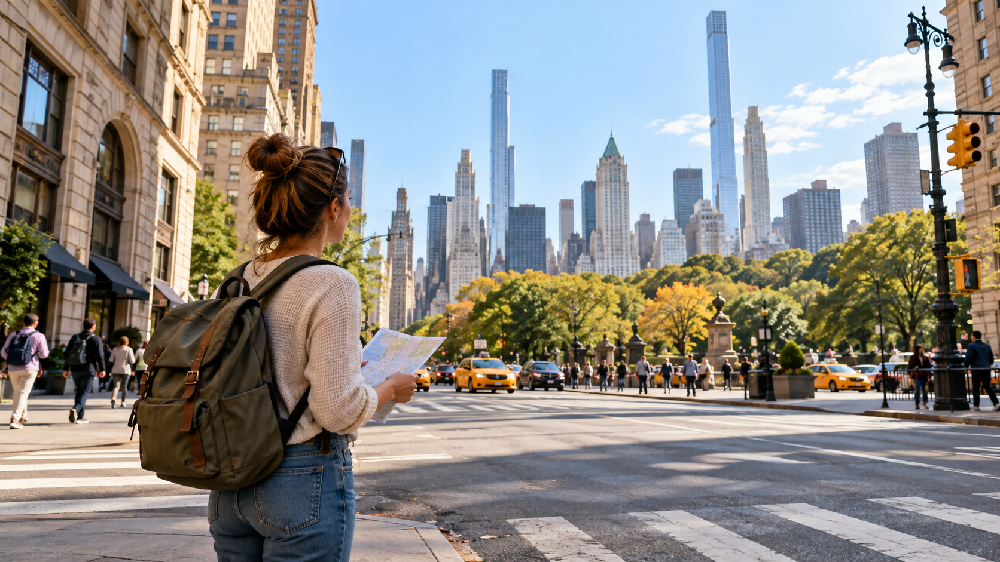

First Time Visiting NYC? Start Here

New York City is not difficult because there is nothing to do. It is difficult because there is too much to do, and the wrong hotel, reservation, or itinerary can quietly make the trip more tiring and expensive than it needs to be.
You do not need to understand every neighborhood, subway line, restaurant, and attraction before visiting. You only need to make a few important decisions in the right order.
Start with this:
- Decide how many full sightseeing days you have.
- Choose what kind of NYC experience you want.
- Pick a hotel area that supports that plan.
- Book the experiences that can sell out.
- Organize each day by neighborhood.
- Leave room for food, weather, walking, and rest.
This guide will help you get started, then point you toward more detailed NYC guides when you are ready to plan the specifics.
The Short Answer: What Should You Plan First?
| If you have… | Start with… | Avoid… |
|---|---|---|
| One full day | One compact neighborhood zone and one major attraction | Trying to see every famous landmark |
| Two days | Midtown plus Lower Manhattan or Central Park | Adding multiple boroughs |
| Three to four days | Midtown, downtown, and one Uptown, Chelsea, or Brooklyn day | Booking every hour |
| Five or more days | A slower mix of landmarks, neighborhoods, food, museums, and rest | Treating every day like a checklist |
| Children | Shorter routes, bathrooms, food, and breaks | Long cross-city days |
| Older travelers | Elevator access, taxis, buses, and realistic walking distances | Assuming everyone can walk 20,000 steps |
| A tight budget | Free attractions, casual food, and a well-connected hotel area | Choosing a cheap hotel with expensive daily transportation |
| A Broadway show | The show first, then nearby dinner and sightseeing | Booking a distant restaurant before the performance |
Choose one geographic area and one main anchor for each day. Add nearby flexible stops around it. That one rule will prevent a remarkable amount of unnecessary subway travel.
Step 1: Decide How Many Full Days You Actually Have
Do not count your arrival and departure days as normal sightseeing days unless your schedule genuinely allows it.
Airport transfers, immigration, luggage, hotel check-in, traffic, and fatigue can consume much more time than visitors expect. A late afternoon arrival is usually the beginning of a light first evening, not the beginning of a full sightseeing day.
One full day
Choose one compact area.
Good options include:
A one-day visit is not the time to combine the Statue of Liberty, Central Park, Brooklyn Bridge, and several museums.
Two full days
Two days can give you a useful first taste of NYC if you stay disciplined.
A sensible structure could be:
Do not try to squeeze all four into the same weekend.
Three or four full days
This is a much more comfortable length for a first visit.
You can usually include:
You will still need to make choices, but the trip does not have to feel like a race.
Five days or more
Longer visits allow you to slow down and explore beyond the standard tourist route.
You can add:
For a detailed breakdown, see how many days you need in NYC.
Step 2: Decide What Kind of NYC Trip You Want
Before collecting attraction lists, decide what you actually want the trip to feel like.
The classic first visit
Prioritize:
The food-focused visit
Prioritize:
Start with how to build a NYC food day without reservations.
The relaxed neighborhood visit
Prioritize:
This style is less about collecting landmarks and more about enjoying how different parts of the city feel.
The museum and culture visit
Choose one major museum per day rather than trying to visit three large museums in a single afternoon.
The Met, the American Museum of Natural History, and the Museum of Modern Art can each consume much more time than a first-time visitor expects.
The family visit
Prioritize:
You can find more practical planning advice in NYC With Kids.
Step 3: Choose Your Hotel Area Before Choosing Your Hotel
The hotel itself matters, but the neighborhood often matters more.
A hotel that saves you $80 per night may not be a bargain if it adds an hour of transportation every day, forces you to take taxis at night, or makes it difficult to return for an afternoon break.
Use Where to Stay in NYC: Best Neighborhoods for First-Time Visitors for the deeper comparison.
Step 4: Book the Right Things First
Do not book every activity simply because reservations are available.
Instead, divide your plans into three categories.
These may sell out, have limited capacity, or anchor the entire day:
These may be flexible, but reservations can still make the day easier:
These work well around your main reservation:
Your safest order is:
- Book the fixed-date experience.
- Add nearby attractions.
- Plan food in the same area.
- Leave space for weather, walking, and delays.
See Which NYC Attractions Should You Book Before Your Trip?
Step 5: Understand NYC Geography
New York City has five boroughs, but most first-time sightseeing happens in a smaller collection of neighborhoods. Even Manhattan should not be treated as one compact attraction zone. NYC Tourism's official visitor information also separates the city into distinct boroughs and transportation areas.
These combinations make sense:
These combinations require more caution:
The Statue of Liberty is not a quick photo stop. Ferry boarding, security, travel time, and time on the island make it a substantial part of the day.
Central Park is not one attraction either. Walking from the southern edge to the Met or the American Museum of Natural History can take much longer than the map suggests.
Once you understand how NYC is divided into neighborhoods, planning becomes much easier when you can see everything in one place.
The Ultimate NYC Google Maps Guide includes more than 250 hand-picked NYC attractions, restaurants, viewpoints, parks, museums, neighborhoods, and hidden gems across all five boroughs.
It works directly inside Google Maps, so you can:
- See what is close to your hotel
- Find restaurants near each attraction
- Build days around one neighborhood
- Add nearby viewpoints, parks, and rest stops
- Get live directions while exploring
- Create your own customized itinerary
Instead of opening dozens of tabs and saving random places from different websites, you can use one organized map to decide what actually fits together.
Get the map here →Check out Which NYC Attractions Are Close Enough to Do Together? before building each day.
Step 6: Learn the Transportation Basics
You do not need to memorize the subway map. You need to understand the basic choices.
Walking
Walking is often the best option within one neighborhood or for short Midtown trips. It also helps you experience the city rather than viewing it entirely through a subway window.
The mistake is assuming that every attraction that looks close on a map is an easy walk after six hours of sightseeing.
Subway
The subway is usually the most useful way to travel between major areas. The MTA provides official route planning, service alerts, subway instructions, and accessibility information. The system runs around the clock, but service patterns, construction, and elevator availability can change.
Learn these basic ideas:
OMNY
OMNY is the current tap-to-pay system for the subway and local buses. Travelers can generally use a contactless bank card, phone, watch, or OMNY Card.
The important rule for groups is easy to miss: use the same physical card or device consistently if you want that payment method to receive transfer and cap benefits. One payment method can pay for multiple riders, but the additional riders do not build the payer's weekly cap.
If each adult wants separate cap benefits, separate payment methods are usually the safer approach.
For the full explanation, read how OMNY works for tourists.
Taxis and rideshares
A taxi can be worthwhile when:
A taxi is not automatically faster. Manhattan traffic can be painfully slow.
At airports, use official taxi stands or marked rideshare pickup areas. Do not accept transportation from people who approach you inside the terminal. Official airport information provides transportation options and warns travelers about unauthorized drivers.
Step 7: Plan Your Airport Arrival Separately
JFK, LaGuardia, and Newark are not interchangeable.
JFK
JFK offers AirTrain connections to Jamaica and Howard Beach, where travelers can connect to the subway or Long Island Rail Road.
Public transportation may be useful for light luggage and straightforward hotel locations. A taxi or rideshare may be easier for families, large bags, or late-night arrivals.
LaGuardia
LaGuardia connects to the subway through bus services such as the Q70. This can be practical for certain neighborhoods, but traffic still affects taxis and buses.
Newark
Newark connects with New Jersey Transit and other rail options. Remember that NJ Transit, PATH, and the MTA are separate systems with separate fare structures.
Your airport decision should depend on:
Do not book a timed attraction immediately after landing unless you have a generous buffer.
For detailed airport decisions, use the relevant airport-transfer guide on the site.
Step 8: Build a Realistic Budget
A NYC budget is not just a hotel price plus a few subway rides.
Plan for:
Hotel prices can vary dramatically by dates, neighborhood, season, events, and taxes. Compare the final total, not just the advertised nightly rate.
Restaurant prices also expand once you add tax, drinks, tips, and any clearly disclosed service charges. NYC's consumer-protection guidance advises travelers to check prices, fees, ticket sellers, and business policies carefully.
For detailed planning bands and examples, see How Much Does a Trip to NYC Cost?
Step 9: Know the Basic Tourist Rules
You do not need a legal handbook, but you should know a few practical rules.
NYC's Department of Consumer and Worker Protection specifically provides tourist guidance about unauthorized ticket sellers, pedicabs, restaurant charges, and complaints.
For a more detailed breakdown, read NYC Scams Tourists Still Fall For.
Step 10: Plan for Walking, Bathrooms, Weather, and Rest
A classic sightseeing day can easily become a four-to-eight-mile day before you count hotel transfers, subway stairs, queues, and accidental detours.
Plan for reality:
The MTA's accessibility information is station-specific, so check the exact elevator status rather than assuming every subway station is step-free.
For practical rest-stop planning, see Best Places to Sit Down and Rest Near Major NYC Attractions.
A Simple Planning Formula
For each sightseeing day, use this structure:
Examples:
Examples:
Choose somewhere close to the day's route.
This might be:
Every outdoor-heavy day should have an indoor alternative.
This formula gives you enough structure to avoid wasting time without turning the entire trip into a military operation.
How to Start Planning Your Trip This Week
-
First, choose your dates and count your full days
Ignore the temptation to call a late arrival or early departure a full sightseeing day.
-
Next, choose your top three priorities
Maybe they are Broadway, Central Park, pizza, the Statue of Liberty, museums, shopping, skyline views, neighborhood food, or Brooklyn.
-
Then compare hotel areas
Do not book based only on the lowest rate. Check the subway, evening atmosphere, airport route, and walking distance.
-
Book only the experiences that can sell out
Reserve Broadway, observation decks, ferries, major museums, or special events first.
-
Build days by neighborhood
Use a map to see what is genuinely close together.
-
Add meals and rest stops
Food and rest are not interruptions to the itinerary. They are part of what makes the itinerary work.
-
Check the forecast and service status
The MTA app can help with current routes and service changes. Attraction hours, fares, restaurant policies, and airport pickup rules should be checked again shortly before travel.
If you want all your planning options in one place, the Ultimate NYC Google Maps Guide includes more than 250 hand-picked attractions, restaurants, parks, viewpoints, museums, and neighborhood stops across the five boroughs. It works directly in Google Maps and helps you see what is actually near your hotel or daily anchor.